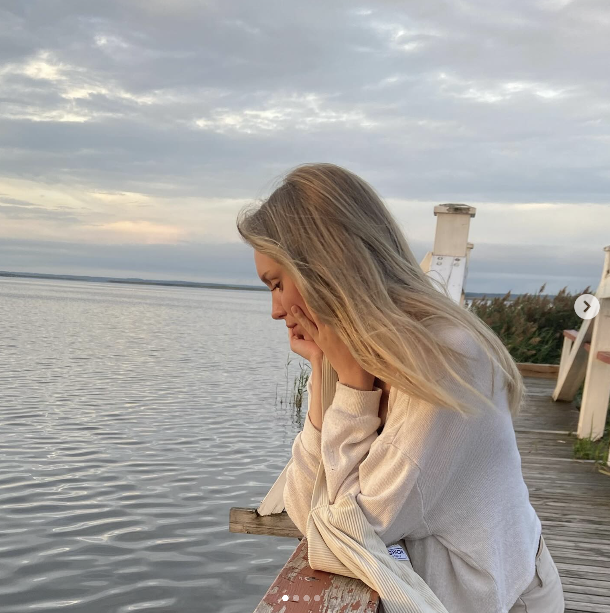

ABOUT ME
Experienced in physical therapy and currently pursuing studies in informatics. I enjoy
continuous learning, working with people, and bringing creative
problem-solving into both healthcare and digital environments.

EDUCATION
Bachelor of Science in Engineering
IMC University of Applied Sciences
2025 - ...
Bachelor of Science in Health Sciences
cum laude
Tartu Applied Health Sciences University
2020-2025
Upper secondary education
Rapla Ühisgümnaasium
2019
ADDITIONAL COURSES
-
Inspiratory Muscle Training (2024)
-
Common Musculoskeletal Problems (2024)
-
Software Testing Course (2023)
-
Evidence-Based Kinesio Taping (2021)
-
The Science of Exercise (2020)
LANGUAGE SKILLS
Estonian
English
Russian
German